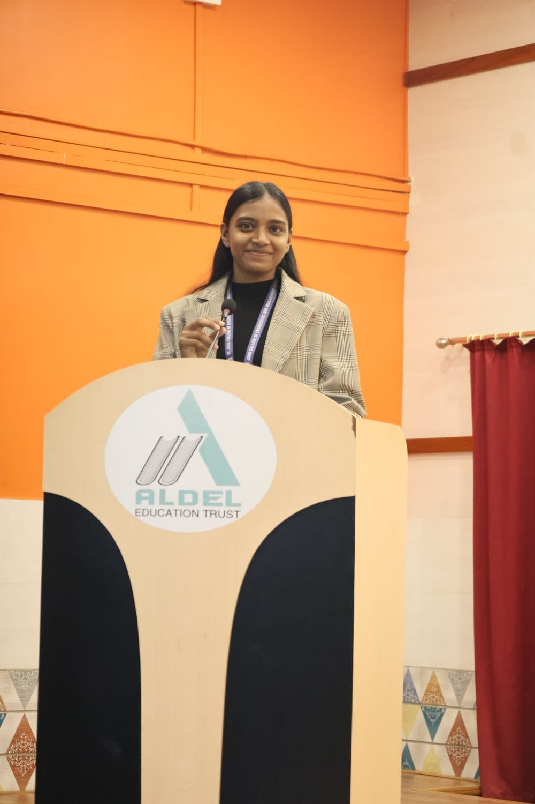
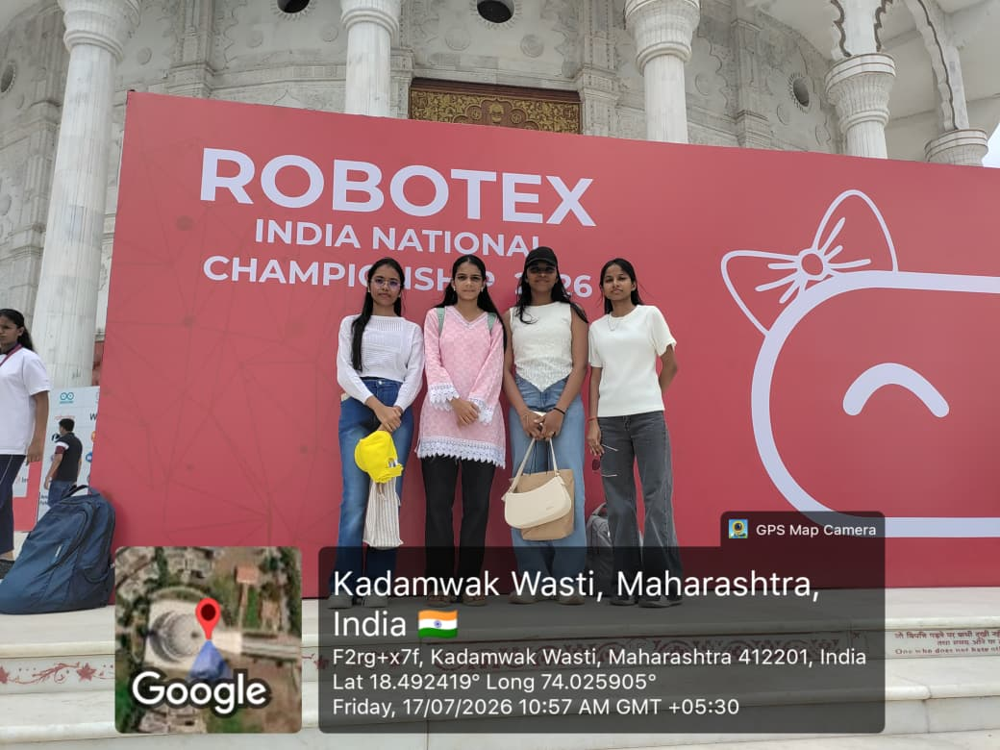
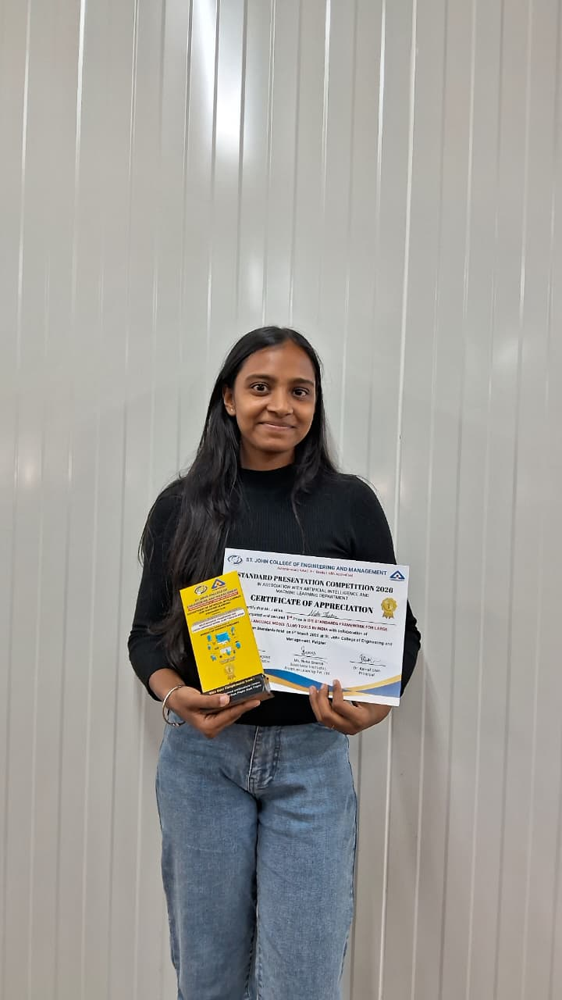
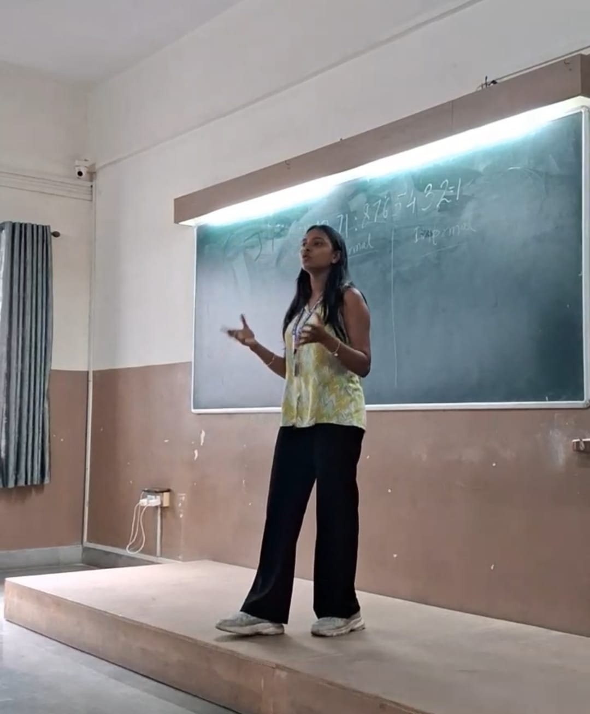
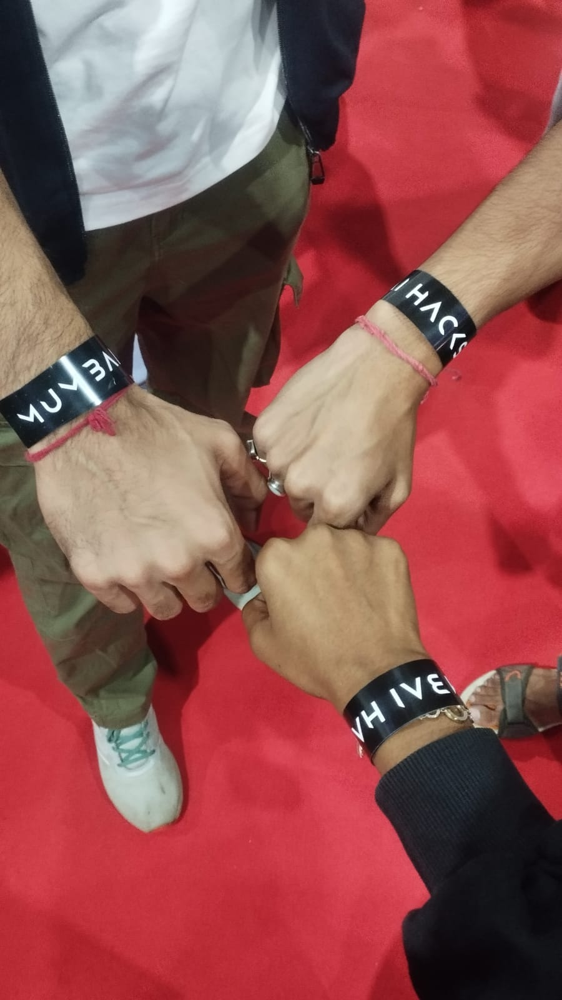
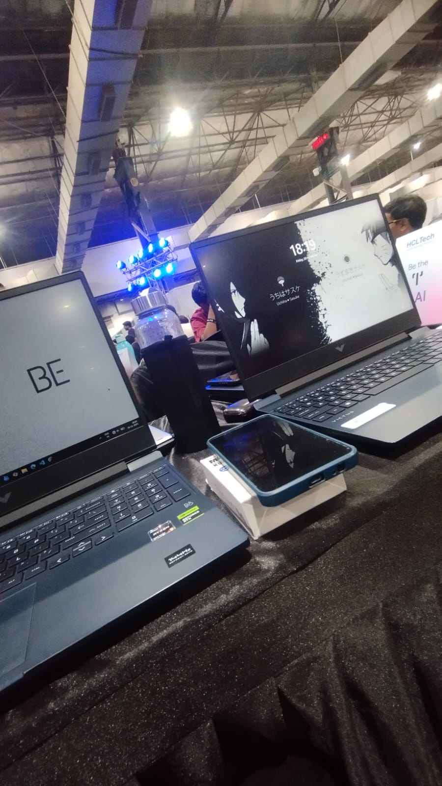

01↗
NIKO
ConceptA future personal AI I want to build around memory, voice, retrieval, tools, and a physical gateway. For now, it is a question I am designing toward—not a finished project.
AI SystemsVoiceMemory

Student · Learner · Writer
A record of the problems, decisions, experiments, and lessons behind the work.
A future personal AI I want to build around memory, voice, retrieval, tools, and a physical gateway. For now, it is a question I am designing toward—not a finished project.
An AI-driven aerodynamic drag prediction system that uses geometric car parameters to predict drag coefficient and provide fast design feedback.
A 10-day computer-vision internship project focused on detecting common food items from images using a custom dataset and YOLOvX.
The computer-vision component of a national robotics competition project, focused on detecting candles and walls in the environment.
A live 20-minute workout application with tracking, nutrition guidance, and an AI plan-generation flow powered by Gemini.
An AI-based viva examination system where I contributed to the project with Gemini and a FastAPI backend.
A backend project built while following my AI Engineer roadmap: CRUD endpoints, validation, SQL, SQLite, relational data, and automated tests.
I’m studying Artificial Intelligence & Machine Learning, but I’m more interested in understanding systems than collecting labels.
I’m deliberately trying to become a strong AI Engineer by learning the foundations, building things, breaking them, and going back to understand why.
Right now that means computer vision, machine learning, APIs, databases, RAG, and the engineering that turns an idea into something that actually works.
Machine Learning · Computer Vision · YOLO · Object Detection · Model Training · Evaluation
LLM APIs · Gemini · OpenAI · FastAPI · REST APIs · API Integration
Python · SQL · SQLite · Git · Docker · Validation · Testing
YOLOvX by WISERLI
Worked on computer-vision food detection, custom dataset creation and annotation, model training/evaluation, and team integration.
WISERLI Startup
Contributing to an AI-based aerodynamic drag prediction project and coordinating with a four-member team under mentor guidance.
BIS × SJCEM Standard Presentation Competition · 2026
Recognized for a presentation at the college-level standard presentation competition.
Computer Vision / Firefighting Robot · 2026
Took the computer-vision work for the firefighting-robot project to a national robotics competition.
Building is not only code. These are a few moments from presenting, competing, and working with people.



I’ve always been drawn to the space between ideas and people — explaining something complicated, presenting an idea clearly, asking better questions, or simply making someone understand what I mean.
From technical presentations and public speaking to writing and working with teams, communication is one of the ways I learn, build, and contribute.
Technical and idea-driven presentations, delivered to real audiences.
Turning a concept into a story people can follow and remember.
Coordinating people, responsibilities, and ideas around shared work.
Using words to explore questions, observations, and things I’m still figuring out.



Speaking · Presenting · Collaborating · Writing
I write about being human, growing up, uncertainty, and—occasionally—the questions AI leaves in my head.

An aspiring AI engineer asking whether every technically possible thing is worth building.
Read on Medium ↗
A reflection on intuition, boundaries, growth, and the strange process of becoming yourself.
Read on Medium ↗
On moving through uncertainty, holding onto hope, and accepting that some moments do not come back.
Read on Medium ↗
A piece about feeling stuck, finding a way back up, and discovering that difficult seasons can teach you how to swim.
Read on Medium ↗
A personal piece about the place music holds in my life.
Read on Medium ↗Things I’m learning, building, and working on right now.
Curious people, useful conversations, things worth learning.
I’m eager to keep learning, build things I don’t fully know yet, and learn from people who are further along. If you’re working on something interesting, have an idea to share, or simply want to connect, I’d love to hear from you.